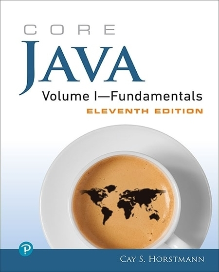

Core Java Volume I — Fundamentals
Don’t mind the impressive 1000 pages — you can easily read this book from cover to cover. It puts aside the playful tone and focuses on detailed explanations of Java core. Each chapter is devoted to a certain subject, starting from introduction to the language and Java programming environment and moving to data structures, objects and classes and so on. Unlike many books for beginners, Core Java gives an explicit coverage of collections and generics, which is useful for real programming.
All in all, it is a great reference book. Read it once and return to it anytime you need to refresh your knowledge.
Pros: a full reference to Java Core and attention to collections and generics, profound explanations.
Cons: some topics, like generics, are covered less diligent than others.